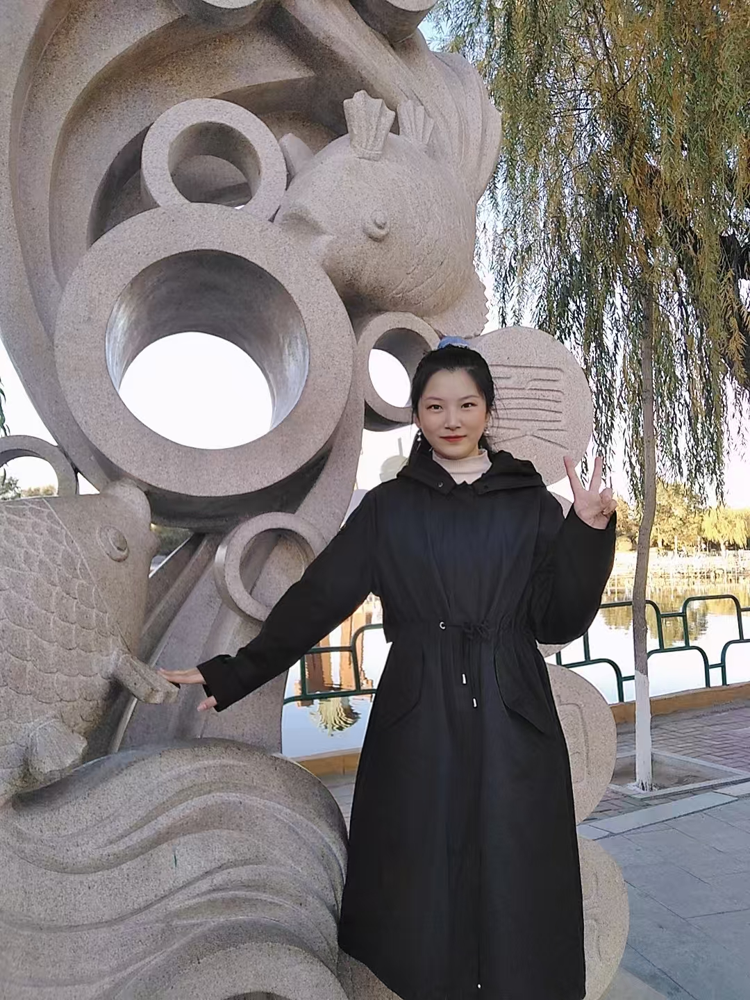

Prof. Meng Wang
IEEE Fellow, IAPR Fellow, and recipient of the National Science Fund for Distinguished Young Scholars.
Google Scholar →
Academic Homepage
Ph.D. Candidate in Computer Science and Technology
Hefei University of Technology · Hefei, China
I am a Ph.D. candidate at Hefei University of Technology, advised by Prof. Meng Wang and Prof. Dan Guo. My research spans multimodal affective computing, computer vision, and machine learning, with a focus on cross-modal alignment, video grounding, bodily behavior understanding, and brain-signal decoding for brain-computer interfaces. I have published 15 peer-reviewed papers, including six as first author, at venues such as IEEE TPAMI, ICML, ACM MM, AAAI, CVPR, CogSci, and ICASSP.
The ICML 2026 work See the Emotion and its codebase are publicly available.
See the Emotion was accepted by ICML 2026; one co-authored paper was accepted by CVPR 2026.
Two papers were accepted by CogSci 2026.
GraphMD was accepted by ICASSP 2026.
Received the National Scholarship for Doctoral Students.
Ph.D. Candidate in Computer Science and Technology
B.Eng. in Internet of Things Engineering
IEEE Fellow, IAPR Fellow, and recipient of the National Science Fund for Distinguished Young Scholars.
Google Scholar →Researcher in multimedia understanding, affective computing, and multimodal intelligence.
ORCID →Company strategy, technology projects, and university-industry collaboration.
Journals: IEEE TMM, ACM TOMM, IEEE TNNLS, IEEE TAFFC, EAAI, Information Fusion, IVC, Advanced Technology in Neuroscience, Neurocomputing.
Conferences: ICML, NeurIPS, CVPR, AAAI, ACM MM, CogSci, ICME.